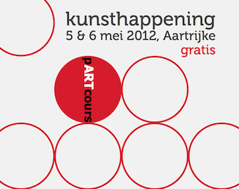

Tine Demol
24/10/1960
Als bakkersdochter was ik al heel snel creatief bezig met bloem en deeg in de bakkerij. Ook via de jeugdbeweging werden mij heel wat creatieve impulsen aangeboden. Later studeerde ik ergotherapie en werkte vervolgens als opvoedster, ergo, thuisbegeleidster in de welzijnssector en als creatief verantwoordelijke bij een schoolleverancier. Sinds oktober 2006 heb ik mijn eigen bedrijf opgericht om alle creatieve activiteiten (Home) op zelfstandige basis te kunnen uitvoeren.
Intussen ben ik werkzaam voor een aantal organisaties die creatieve cursussen organiseren; ik werk mee als lesgeefster.
Naast een aantal andere, eerder losse opdrachten ben ik ook freelance demonstratrice bij STAEDTLER.
Ik organiseer workshops met fimo in mijn eigen atelier (zie ‘workshops’).
Tussendoor ontwerp ik eigen juwelen met zelf gecreëerde kralen in fimo, hiervoor pas ik allerlei verschillende technieken toe. De juwelen in fimo zijn te koop. U kan mij hiervoor steeds contacteren.
Regelmatig kom ik ook naar buiten met mijn fimo-creaties. Hierbij enkele beelden van voorbije activiteiten:
- pARTcours 2012
 - November 2011
- Kunstenaar in de kijker 2011
- pARTcours 2011
- Kiezen voor kunst 2010
- Tuin Ontmoet Kunst 2010
- pARTcours 2010
- Kerstbeurs Heist: organisatie volksdansgroep De Sloepe: 12 december 2009
- Kerstbeurs Hobby Creatief Salon Kortrijk 7-8 november 2009
- Dubbelglas Torhout: kunst in etalages: november 2009
- Buren bij kunstenaars oktober 2009

- Tentoonstelling ‘Kunst in het gemeentehuis’ te Kortemark van 9 mei tot 9 augustus 2009
- Week van de amateurkunstenaar: van 30 april tot en met 3 mei 2009, tentoonstelling in de pastorie van Loppem

- Lentebeurs Oud St Jan Brugge van 10 tot 13 april 2009
- Hobby Creatief Salon in Kortrijk Expo van 2 tot 5 april 2009
- Kerstbeurs Heist: organisatie volksdansgroep De Sloepe: 13 december 2008
- Hobbybeurs Roeselare: november 2008
- Dubbelglas Torhout: kunst in etalages: november 2008
- Buren bij kunstenaars 17, 18 en 19 oktober 2008
- Vrouw-tentuinstelling Markant Veldegem 30 en 31 mei en 1 juni 2008
- Week van de AmateurKunstenaar mei 2008
- Hobbybeurs Kortrijk Xpo februari 2008
- Kerstbeurs Expo Gent 2007
- opendeur op 7 en 8 december 2007: